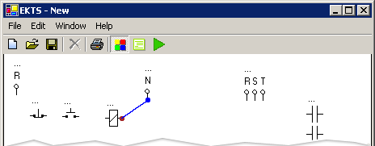
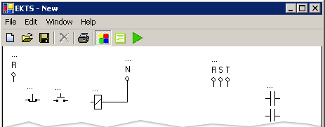

[prew] [next]
Circuit Connections
Make a Connection
To make a connection follow steps below:
- Move to the connection point of the element till appears red dot.
- Press left mouse button in the small red circle and move mouse pointer to the other connection point.
- Get close to the other connection point of the element, line or node until blue dot appears. (Figure 7)
- Release left mouse button on the appeared blue dot.
- Connection lines drew between specified two dots as shown in the Figure 8.

Figure 7 Red and Blue Dots Appeared for Making Connections.

Figure 8 Connection made between connection points of two elements.
Move Connection Line
To move connection line simply press on line using left mouse button and drag line to the desired location. Connection lines can be moved horizontally or vertically.
Delete Connection Line
To delete connection lines follow steps below:
- Select line by using left mouse button. Selected line will convert to red color
- Click delete
 button on tool bar or press delete key on keyboard.
button on tool bar or press delete key on keyboard.